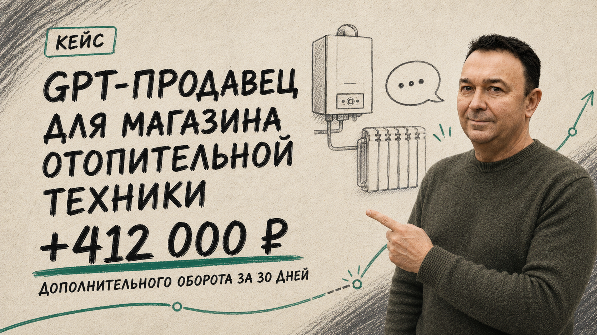
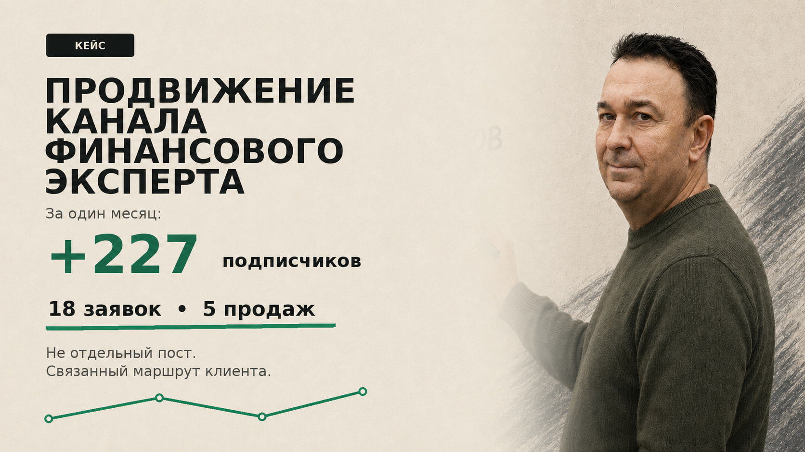
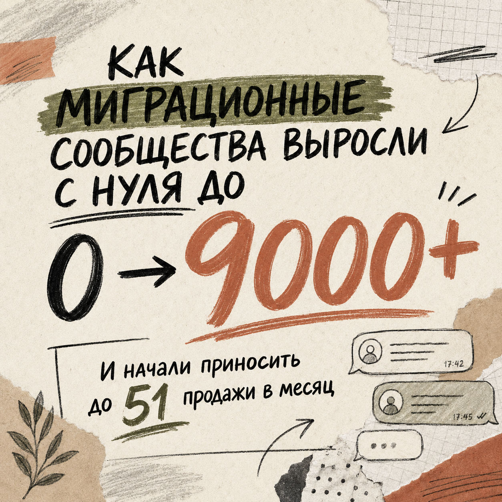

Упаковка
За первые секунды человек не понимает, куда попал и зачем ему оставаться.
→Метод «Антисбой»
Разберу путь человека от первого касания до покупки. Покажу, где теряется интерес и что исправить в первую очередь.
01 / ДИАГНОСТИКА
Не лечим контент наугад ↘
Не предлагаю публиковать больше, менять подрядчика или увеличивать бюджет — пока непонятно, где именно и почему клиент останавливается.
За первые секунды человек не понимает, куда попал и зачем ему оставаться.
→Контент читают, но не понимают, почему стоит выбрать именно вас.
→Что купить — понятно. Зачем делать это сейчас — нет.
→Человек заинтересовался, но не понял, что делать дальше.
Ищем не «плохой контент», а конкретный разрыв в маршруте клиента.
02 / РЕЗУЛЬТАТ
Вы получите:
03 / ОПЫТ
Ниже — результаты проектов, в которых я перестраивал клиентский путь и коммуникацию с клиентами.

в Авито-магазине отопительной техники после внедрения GPT-продавца

после продвижения Telegram-канала финансового эксперта

в чате RELOTERA IMMIGRATION после перестройки клиентского пути и коммуникации
Финансовые показатели RELOTERA IMMIGRATION приведены по внутренним данным компании. Результат зависит от продукта, спроса и внедрения рекомендаций.
04 / ФОРМАТ
всё проще, чем кажется →
ВАЖНО
Разбор пока не поможет, если у вас ещё нет:
Я не обещаю «сделать, чтобы всё продавалось». Я нахожу конкретные места, где сейчас теряются люди.
«Карта потерь» · 7 500 ₽
Нажмите кнопку «ОБСУДИТЬ РАЗБОР». Сначала проверим, подходит ли вам этот формат. Оплата — только после согласования задачи и даты встречи.
ОБСУДИТЬ РАЗБОР без оплаты на входе ↑